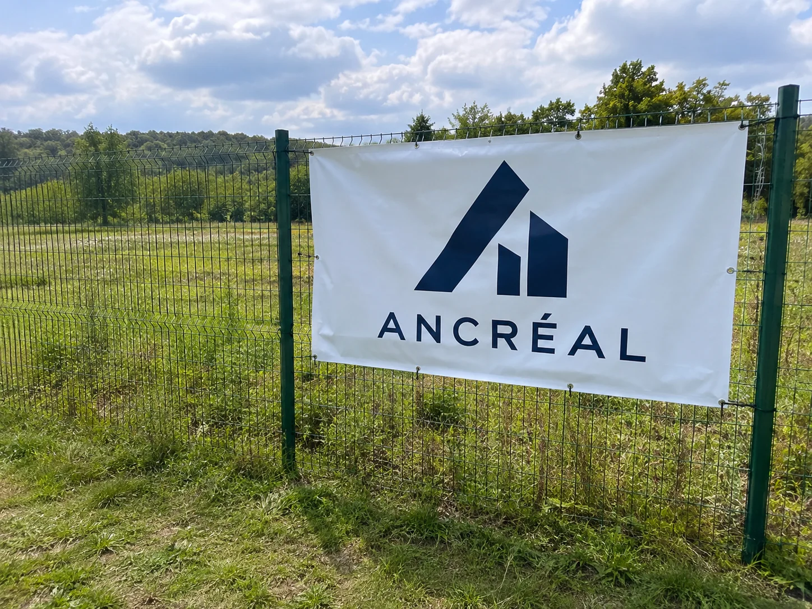

Prairies et pâtures
Fleurs sauvages, insectes pollinisateurs, oiseaux qui nichent au sol : une prairie fauchée tard est l'un des milieux les plus riches qui soient.
Ancréal achète des terrains de toute nature pour les protéger de la bétonisation, aujourd'hui et pour les générations suivantes. Aucun mètre carré n'y sera construit. Chaque parcelle devient un patrimoine commun, gardé intact.
Un champ bétonné ne redevient jamais un champ. Chaque année, des prairies, des bois et des terres agricoles disparaissent sous les routes, les zones commerciales et les lotissements. Nous avons décidé d'en racheter et de les garder vivants.
Nous ne cherchons pas seulement les sites exceptionnels. Une prairie au bout d'un village, un bout de bois, une mare ou une friche ont autant besoin d'être protégés. Si un terrain est menacé, il nous intéresse.
Fleurs sauvages, insectes pollinisateurs, oiseaux qui nichent au sol : une prairie fauchée tard est l'un des milieux les plus riches qui soient.
Des arbres laissés vieillir, du bois mort qui abrite la vie, de l'ombre et de l'eau gardées. Pas de coupe rase, jamais.
Elles filtrent l'eau, retiennent les crues et accueillent amphibiens et libellules. Elles font partie des milieux qui ont le plus reculé.
Vieux vergers de village, haies champêtres, jardins à l'abandon : le paysage de nos bourgs, que l'on voit disparaître lotissement après lotissement.
Des terres nourricières mises à disposition d'agriculteurs locaux engagés, plutôt que vendues comme terrains à bâtir.
D'anciens terrains abîmés que l'on rend à la nature : désimperméabiliser, replanter, laisser la vie revenir.

Acheter un terrain ne suffit pas à le protéger. Nous inscrivons sa protection dans le droit, chez le notaire, avec un partenaire spécialiste de la nature qui veille à ce qu'elle soit respectée.
Terrains en vente, successions, parcelles en bordure des zones constructibles, propriétaires qui veulent que leur terre reste une terre.
Ancréal achète en son nom, avec ses fonds propres, des parrainages d'entreprises et de particuliers, et le mécénat quand il existe.
Diagnostic écologique, puis obligation réelle environnementale signée devant notaire avec un partenaire de la protection de la nature.
Un plan de gestion simple, suivi dans le temps : ce que l'on fait, ce que l'on ne fait surtout pas, et ce que l'on observe.
Sorties nature pour nos locataires et leurs enfants, écoles du village, chantiers de plantation : la terre protégée se vit, elle se raconte.
Le terrain entre dans le patrimoine d'Ancréal. Il n'est pas fait pour être revendu, et s'il l'était un jour, sa protection le suivrait.
Un terrain protégé ne rapporte pas de gros loyers, et ce n'est pas ce qu'on lui demande. C'est un bien réel, durable, peu coûteux à entretenir, qui renforce les fonds propres d'Ancréal année après année. Les maisons logent des familles, les terres gardent le pays vivant : les deux forment un même patrimoine, au service de tous.
Objectif issu de notre plan de développement, conditionné aux financements réunis. Les chiffres réels seront publiés chaque année, terrain par terrain.
Nous tiendrons ici un registre public de tous nos terrains : où ils se trouvent, ce qu'ils abritent, comment ils sont protégés. Vous pourrez vérifier, année après année, que la promesse est tenue.
| N° | Territoire | Milieu | Protection | Statut |
|---|---|---|---|---|
| 01 | Grand Est | Prairie bordée de bois | ORE prévue | En étude |
| 02 | Le prochain terrain sera peut-être le vôtre. | Proposer un terrain | ||
Pré, bois, verger, terre agricole ou friche, quelle que soit la surface : proposez-le. Vous saurez qu'il ne sera jamais bétonné.
Proposer un terrain FamillesUne terre de famille que vous ne voulez pas voir lotie : parlons ensemble de la façon de la confier à Ancréal pour qu'elle reste telle que vous l'avez connue.
En parler avec nous Entreprises & particuliersFinancez tout ou partie d'une parcelle. Votre nom figure au registre des terres, et vous êtes invité sur le terrain pour le découvrir.
Devenir parrainCe que nous achetons, nous ne le bétonnons pas. Nous le gardons vivant, et nous le transmettons.
Vous connaissez une parcelle menacée, vous en possédez une, ou vous voulez en parrainer une : écrivez-nous, nous vous répondons personnellement.
Nous écrire